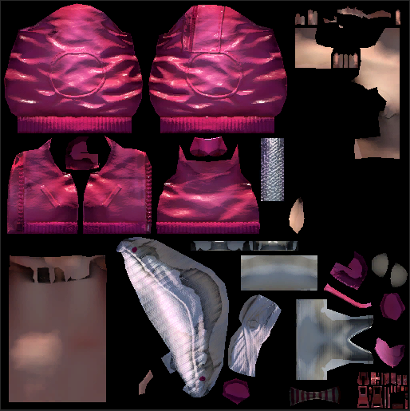
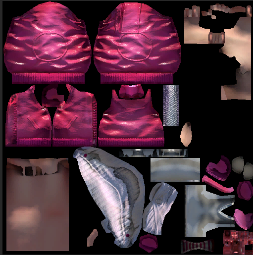
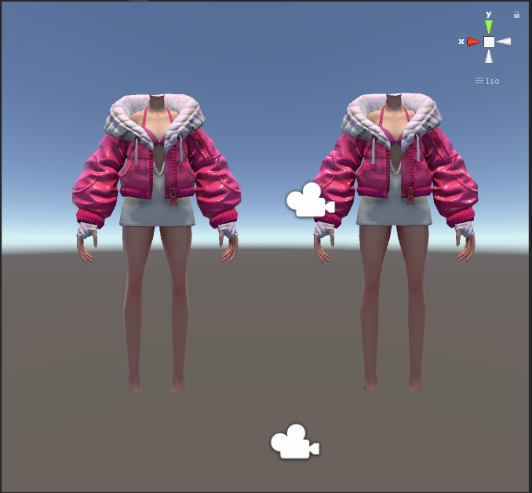

3D模型渲染成2D贴图:
方法:把VS输出的顶点改成改顶点对应的UV坐标，那么最终渲染出来的3D模型就又重新被展开成2D贴图，而且每个像素的颜色都是通过原有材质的PS计算出来的颜色。这时候如果把2D贴图重新贴回模型上，那么看到的模型效果理应和原来直接渲染出来的效果是一模一样的。
float2 uvPos = v.uv0;
#if UNITY_UV_STARTS_AT_TOP
uvPos.y = 1.0 - uvPos.y;
#endif
uvPos = uvPos * 2 - float2(1.0, 1.0);
o.pos = float4(uvPos, 1.0, 1.0);
问题:
1.贴图边缘有黑边。
解决方法:对于生成的贴图，做边缘扩充。
a.Padding
fixed4 frag (v2f i) : SV_Target
{
fixed4 col = tex2D(_MainTex, i.uv);
if (col.a > 0)
return col;
fixed4 c0 = tex2D(_MainTex, i.uv + float2(0, _Delta.y));
fixed4 c1 = tex2D(_MainTex, i.uv + float2(_Delta.x, 0));
fixed4 c2 = tex2D(_MainTex, i.uv + float2(0, -_Delta.y));
fixed4 c3 = tex2D(_MainTex, i.uv + float2(-_Delta.x, 0));
float4 a = float4(ceil(c0.a),
ceil(c1.a),
ceil(c2.a),
ceil(c3.a));
float sum = a.x + a.y + a.z + a.w;
if (sum <= 0)
return col;
col.rgb = ( a.x * c0.rgb + a.y * c1.rgb + a.z * c2.rgb + a.w * c3.rgb)//sum
col.a = 1;
return col;
}
b.Override
fixed4 frag (v2f i) : SV_Target
{
fixed4 col = tex2D(_MainTex, i.uv);
fixed4 over = tex2D(_Override, i.uv);
col.a = over.a;
if (col.a > 0)
col.rgb = over.rgb;
return col;
}
扩边前:

扩边后:

参考资料:http://candycat1992.github.io/2017/05/29/bake-to-texture/
2.半透区域，颜色脏。
主要原因是渲染的时候，半透的部分被背景色或者模型其余的部分的颜色污染了。
解决方法:
在渲染的过程中禁用AlphaBlend，保证渲染出来的2D贴图的颜色的纯净性。
3.渲染错误
主要原因是PBR的计算中，往往需要是方向来进行像素着色。然而我们现在把3D模型渲染成2D贴图的过程中，对于例如本来在背面的点面，依赖视方向计算的部分其实是错误的。
解决方法:
使用法线反方向代替视方向进行计算
float3 normalWorld = UnityObjectToWorldNormal(v.normal);
o.eyeVec = -normalWorld;
限制:
对于方向光，不同角度下光的强度差异可能很大导致渲染出来的贴图明暗变化过大。
解决方法:
建议使用垂直方向光。
注意事项:
烘焙过程中关闭相机MSAA
烘焙结果对比: 左(实时PBR效果),右(烘焙PBR效果)
